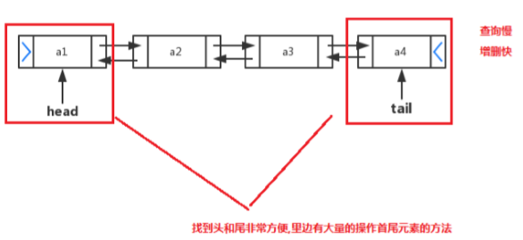

2019-11-05-23:03:28
List集合:
java.util.List 接口继承自 Collection 接口，是单列集合的一个重要分支，习惯性地会将实现了List 接口的对象称为List集合
特点：
1. 它是一个元素存取有序的集合。例如，存元素的顺序是11、22、33。那么集合中，元素的存储就是按照11、 22、33的顺序完成的
2. 它是一个带有索引的集合，通过索引就可以精确的操作集合中的元素（与数组的索引是一个道理）
3.集合中可以有重复的元素，通过元素的equals方法，来比较是否为重复元素
List集合常用方法：
List作为Collection集合的子接口，不但继承了Collection接口中的全部方法，而且还增加了一些根据元素索引来操作集合的特有方法
1.public void add（int index，E element）：将指定的元素，添加到该集合中的指定位置上
2.public E get(int index) :返回集合中指定位置的元素。
3.public E remove(int index) : 移除列表中指定位置的元素, 返回的是被移除的元素。
4.public E set(int index, E element) :用指定元素替换集合中指定位置的元素,返回值的更新前的元素。
1 package demosummary.list;
2
3 import java.util.ArrayList;
4 import java.util.List;
5
6 public class ListTest {
7 public static void main(String[] args) {
8 //创建List集合对象
9 List<String> list = new ArrayList<>();
10 //向list集合添加元素
11 list.add("德玛");
12 list.add("德邦");
13 list.add("皇子");
14 list.add("剑圣");
15 //打印list集合
16 System.out.println(list);//[德玛, 德邦, 皇子, 剑圣]
17 /**
18 public void add(int index, E element) : 将指定的元素，添加到该集合中的指定位置上
19 */
20 list.add(1,"卡莎");
21 System.out.println(list);//[德玛, 卡莎, 德邦, 皇子, 剑圣]
22 /**
23 *public E get(int index) :返回集合中指定位置的元素。
24 */
25 System.out.println(list.get(2));//德邦
26 /**
27 * public E remove(int index) : 移除列表中指定位置的元素, 返回的是被移除的元素。
28 */
29 System.out.println(list.remove(3));//皇子
30 System.out.println(list);//[德玛, 卡莎, 德邦, 剑圣]
31 /**
32 * public E set(int index, E element) :用指定元素替换集合中指定位置的元素,返回值的更新前的元素。
33 */
34 String result = list.set(1, "武器");
35 System.out.println(result);//卡莎
36 System.out.println(list);//[德玛, 武器, 德邦, 剑圣]
37 /**
38 * 增强for遍历list集合
39 */
40 for (String s : list) {
41 System.out.println(s);
42 }
43 }
44 }List集合的子类：
ArrayList集合：
java.util.ArrayList 集合数据存储的结构是数组结构。元素增删慢，查找快，由于日常开发中使用多的功能为 查询数据、遍历数据，所以 ArrayList 是常用的集合。
注意：许多程序员开发时非常随意地使用ArrayList完成任何需求，并不严谨，这种用法是不提倡的。
LinkedList集合：
java.util.LinkedList 集合数据存储的结构是链表结构。方便元素添加、删除的集合。（LinkedList是一个双向链表）

LinkeList集合的一些操作方法（了解即可）
public void addFirst(E e) :将指定元素插入此列表的开头。
public void addLast(E e) :将指定元素添加到此列表的结尾。
public E getFirst() :返回此列表的第一个元素。
public E getLast() :返回此列表的后一个元素。
public E removeFirst() :移除并返回此列表的第一个元素。
public E removeLast() :移除并返回此列表的后一个元素。
public E pop() :从此列表所表示的堆栈处弹出一个元素。
public void push(E e) :将元素推入此列表所表示的堆栈。
public boolean isEmpty() ：如果列表不包含元素，则返回true
1 package demosummary.list;
2
3 import java.util.LinkedList;
4
5 public class LinkedListTest {
6 public static void main(String[] args) {
7 //创建LinkedList集合对象
8 LinkedList<String> list = new LinkedList<>();
9 /**
10 * public void addFirst(E e) :将指定元素插入此列表的开头。
11 * public void addLast(E e) :将指定元素添加到此列表的结尾。
12 */
13 list.addFirst("德玛");
14 System.out.println(list);//[德玛]
15 list.addFirst("德邦");
16 System.out.println(list);//[德邦, 德玛]
17 list.addLast("皇子");
18 System.out.println(list);//[德邦, 德玛, 皇子]
19 /**
20 * public E getFirst() :返回此列表的第一个元素。
21 * public E getLast() :返回此列表的后一个元素。
22 */
23 System.out.println(list.getFirst());//德邦
24 System.out.println(list.getLast());//皇子
25 /**
26 * public E removeFirst() :移除并返回此列表的第一个元素。
27 * public E removeLast() :移除并返回此列表的最后一个元素
28 */
29 // String s = list.removeFirst();
30 // System.out.println(s);//德邦
31 // System.out.println(list);//[德玛, 皇子]
32 // String s1 = list.removeLast();
33 // System.out.println(s1);//皇子
34 // System.out.println(list);//[德玛]
35 /**
36 * public E pop() :从此列表所表示的堆栈处弹出一个元素。
37 */
38 String pop = list.pop();
39 System.out.println(pop);//德邦
40 /**
41 * public void push(E e) :将元素推入此列表所表示的堆栈。
42 */
43 list.push("卡莎");
44 System.out.println(list);//[卡莎, 德玛, 皇子]
45 list.push("武器");
46 System.out.println(list);//[武器, 卡莎, 德玛, 皇子]
47 /**
48 * public boolean isEmpty() ：如果列表不包含元素，则返回true
49 */
50 boolean empty = list.isEmpty();
51 System.out.println(empty);//false
52 }
53 }